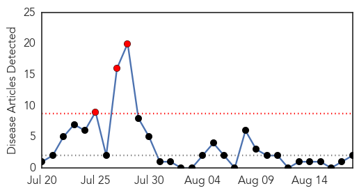

Ebola
30-Day Web Trend
25 alerts, 0 warnings
30-Day Twitter Trend
22 alerts, 0 warnings

Article Locations

Article Confidences
Top Articles:
- 1.000
- Kenya Shuts Borders To Ebola-Hit West African Countries
- 1.000
- S. Africa sends specialists to W. Africa to fight Ebola
- 1.000
- Cuba Increases Prevention against Ebola
- 1.000
- UN health agency seeks to allay fears about air travel
- 1.000
- Turks are not fully informed about Ebola outbreak
- 1.000
- Ebola: health fears stop British journalist from hosting awards
- 1.000
- Patients flee Ebola quarantine
- 1.000
- Another Ebola problem: Finding its natural source
- 1.000
- Risk Of Getting Ebola During Air Travel Is Low-WHO
- 1.000
- Nigerian man with symptoms of Ebola quarantined in Spain
- 1.000
- UN health agency requests exit screening of travellers
- 1.000
- Ebola suspect held at Entebbe airport
- 1.000
- Ebola crisis
- 1.000
- Shoot on sight
- 1.000
- 17 Who fled Liberia Ebola Clinic Still Missing
- 1.000
- Guinea declares Ebola a 'national health emergency' - Africa
- 1.000
- WHO Opposes Trade And Travel Bans, As Ebola Spreads In West Africa
- 1.000
- Liberia Ebola centre attacked, straining containment efforts
- 1.000
- Ebola patients ‘mingle’ with crowd at Liberia clinic
- 1.000
- Ebola-hit countries 'must screen all departing travellers'
- 1.000
- World Health Organization Calls On Ebola-Hit Countries To Screen Departing Travelers For The Disease
- 1.000
- The Ebola outbreak: Is it safe to travel?
- 1.000
- Joburg man tests negative for Ebola
- 1.000
- Miserere mei, the Ebocalypse is here!
- 1.000
- Ebola: No sign of the virus slowing down
- 1.000
- British woman tested for Ebola after dying following trip to Nigeria
- 1.000
- The most from the coast
- 1.000
- New Mexico woman tested for Ebola virus
- 1.000
- Liberia hunts escaped Ebola victims who fled quarantine
- 1.000
- Liberia's Ebola fight set back by growing unrest
- 1.000
- Zim national tested for Ebola
- 1.000
- Liberia Confirms West Point Patients Missing
- 1.000
- WHO: Ebola Affected Countries Must Conduct 'Exit Screenings' at Airports, Borders
- 1.000
- Latin America Prepares Hospitals, Airport Screenings to Fight Ebola Threat
- 1.000
- Ebola crisis: Liberia confirms West Point patients missing
- 1.000
- Travel and Transport in Relation to Ebola Virus Disease Outbreak
- 1.000
- East Africa: On high alert, governments commit resources to fight killer Ebola
- 1.000
- NM woman being tested for Ebola at UNMH
- 1.000
- Ebola crisis: Liberia hunts escaped Ebola victims as WHO calls for greater screening
- 1.000
- Ebola Outbreak Update
- 1.000
- Response to West Africa Ebola Epidemic Remains Dangerously Inadequate - Guinea
- 1.000
- Ebola Virus Disease: Lessons from Uganda
- 1.000
- SA man tests negative for ebola
- 1.000
- Liberia ‘to shoot’ illegal border to control Ebola
- 1.000
- 17 Liberians Patients Escape From Detention Centre
- 1.000
- WHO: Ebola-hit countries must screen all departing travellers
- 1.000
- Acsa to implement Ebola measures
- 1.000
- Vietnam to buy 10,000 Ebola protective clothing
- 1.000
- WHO Urges Screening of Travelers to Contain Ebola Outbreak
- 1.000
- 5 myths about the Ebola virus
Showing top 50 articles...
Top Tweets:
- 0.971
- End Ebola Now informational PSA for the West African region-please watch and share https://t.co/VLPIbUdvn5 endebolanow ebola
- 0.971
- End Ebola Now informational PSA for the West African region - please watch and share https://t.co/VLPIbUdvn5 endebolanow ebola
- 0.971
- End Ebola Now informational PSA for the West African region - please watch and share https://t.co/VLPIbUdvn5 endebolanow ebola
- 0.971
- End Ebola Now informational PSA for the West African region - please watch and share https://t.co/VLPIbUdvn5 endebolanow ebola
- 0.971
- End Ebola Now PSA for the West African region - please watch and share https://t.co/VLPIbUdvn5 endebolanow ebola
- 0.938
- If in Nigeria, call 0-800-EBOLA-HELP for Ebola questions. EbolaChat
- 0.737
- RT: .@ekemma Ebola is not airborne. Ebolachat
- 0.735
- https://t.co/VLPIbUdvn5 End Ebola Now PSA for the West African region - please watch and share endebolanow
Hepatitis
30-Day Web Trend
3 alerts, 0 warnings

30-Day Twitter Trend
1 alerts, 0 warnings

Article Locations

Article Confidences

Top Articles:
Top Tweets:
-
No tweets found for Aug 18, 2014